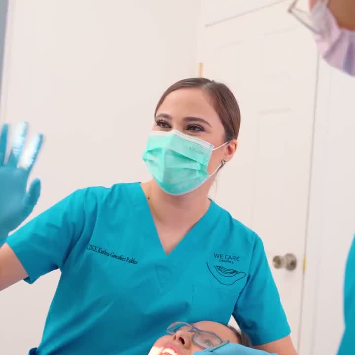

Your smile deserves a team that truly cares
Modern, gentle dental care in San Luis Río Colorado at prices that make sense. English spoken. American patients welcome.

C.D. E.E. Karina González Robles
Founder, WE CARE Dental · San Luis Río Colorado, Sonora
WE CARE Dental is her practice, minutes from the San Luis, Arizona border. She and her team care for patients from both sides of the line, in English and in Spanish.
Our Services
Complete dental care for the whole family, from routine cleanings to full smile makeovers.
Cleanings & Checkups
Routine cleanings, exams and X-rays to keep your smile healthy.
Teeth Whitening
Professional whitening for a brighter smile in a single visit.
Fillings & Restorations
Tooth-colored fillings that look and feel natural.
Crowns & Bridges
Durable, natural-looking crowns and bridges to restore your bite.
Dental Implants
Permanent tooth replacement that looks and works like the real thing.
Veneers
Cosmetic veneers for a picture-perfect smile.
Root Canals
Gentle root canal therapy to save your natural tooth.
Extractions
Comfortable extractions, including wisdom teeth.
Dentures & Partials
Full and partial dentures custom-fitted for comfort.
Why Patients Cross the Border to See Us
Thousands of Americans choose San Luis Río Colorado for quality dental care. Here is why they choose WE CARE.
Real Savings
Save 50 to 70 percent compared to typical US prices, with no compromise on quality or materials.
Easy to Reach
Just minutes from the San Luis, Arizona port of entry. Park on the US side and walk across.
We Speak English
Clear communication from your first message to your final visit. No surprises, no confusion.
Care That Feels Personal
We treat every patient like family. Honest recommendations and gentle treatment, every time.
Border crossing right now
Reported wait to cross from San Luis Río Colorado back into San Luis, Arizona.
Four public cameras showing the crossing, provided by the City of San Luis, Arizona.
Wait times are published by U.S. Customs and Border Protection and change constantly. Treat them as a snapshot, not a guarantee. Check the official CBP page
Book Your Appointment
Choose a time that works for you. We confirm every appointment personally.
Prefer to talk to a person right away? Message us directly:
Contact Us
Call, message us on WhatsApp, or come see us in San Luis Río Colorado, about 1.2 miles from the San Luis, Arizona crossing.
- 📍AddressAvenida Álvaro Obregón 1407
Between Calle 14 and Calle 15
San Luis Río Colorado, Sonora, México
Directions from the border → - 📞Phone / WhatsApp+52 653 596 0691
- ✉️Emailwecare.kgr@gmail.com
- 🕐Hours
Monday to Friday 9:00 AM - 6:00 PM Saturday 9:00 AM - 2:00 PM Sunday Closed